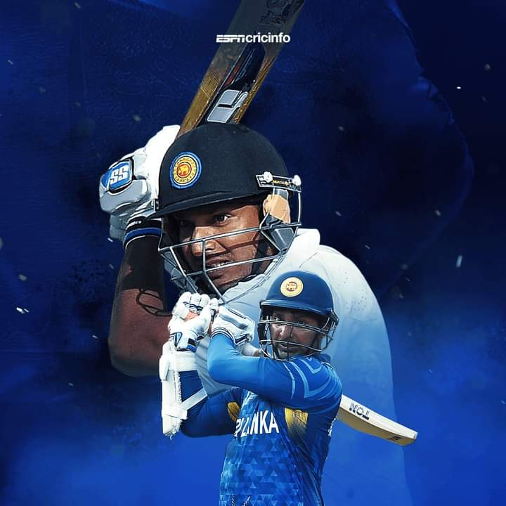

Kumar Sangakkara is a former Sri Lankan cricketer who is widely regarded as one of the greatest wicketkeeper-batsmen in the history of the sport. Here's an overview of his cricketing career and achievements: Full Name: Kumar Chokshanada Sangakkara Date of Birth: October 27, 1977 Place of Birth: Matale, Sri Lanka Playing Role: Wicketkeeper-batsman International Career: Debut: Test Debut: July 20, 2000, against South Africa ODI Debut: July 5, 2000, against Pakistan Batting Style: Left-handed batsman Wicketkeeping: Sangakkara was a stylish left-handed batsman, known for his elegant stroke play and solid technique. He also took on the role of wicketkeeper for a significant part of his career. Records and Achievements: Sangakkara is the leading run-scorer for Sri Lanka in both Test and One Day International (ODI) cricket. He has scored over 10,000 runs in both Test and ODI formats. In 2014, he became the second player in the history of Test cricket (after Graham Gooch) to score four consecutive centuries. Sangakkara has numerous records to his name, including the most dismissals by a wicketkeeper in ODIs. Captaincy: Sangakkara served as the captain of the Sri Lankan national team in all three formats of the game. Under his captaincy, Sri Lanka reached the final of the 2011 ICC Cricket World Cup. Retirement: Sangakkara announced his retirement from Test cricket in 2015 after the second Test of the series against India. He retired from ODI cricket after the 2015 ICC Cricket World Cup. Post-Retirement: Commentary and Administration: After retiring from international cricket, Sangakkara has been involved in commentary and analysis for various cricket tournaments. He has also taken up administrative roles, including serving as the president of the Marylebone Cricket Club (MCC). Awards and Recognition: Sangakkara has received numerous awards and accolades for his contributions to cricket, including the Sir Garfield Sobers Trophy for ICC Cricketer of the Year in 2012. Kumar Sangakkara is not only remembered for his cricketing prowess but also for his leadership on and off the field. His contributions have left a lasting impact on Sri Lankan cricket.
